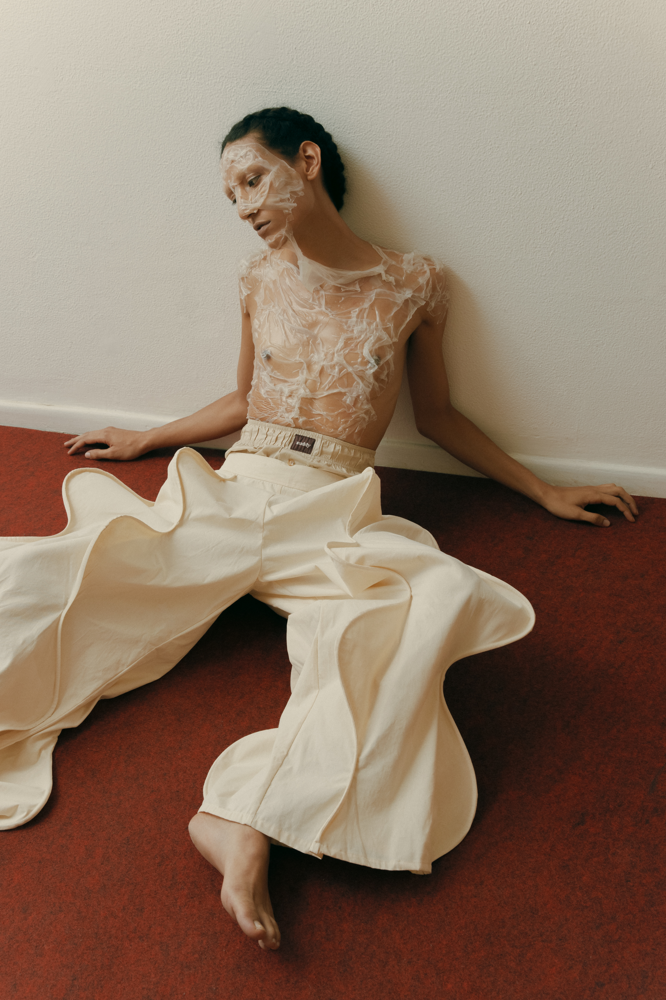
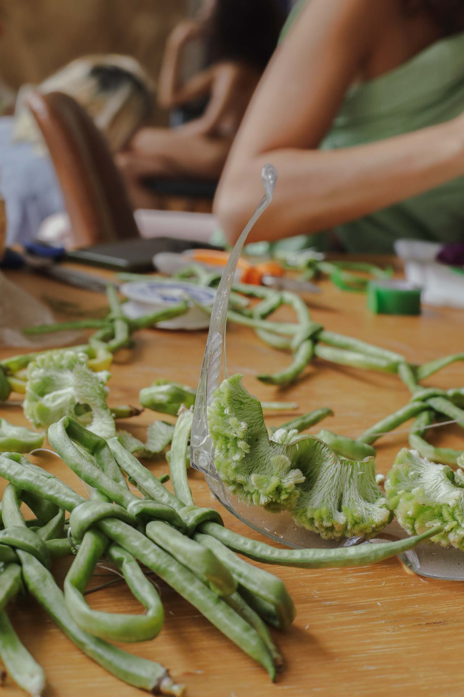
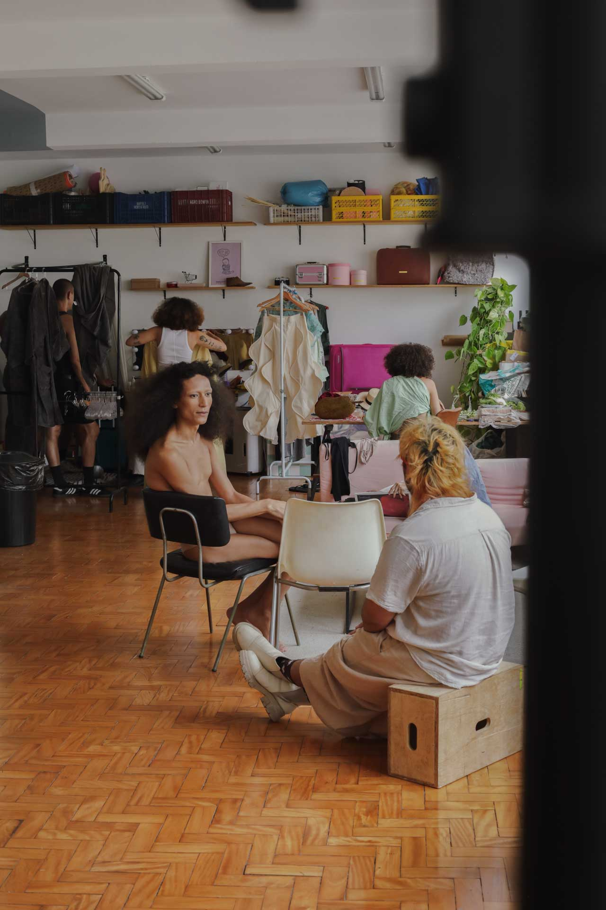
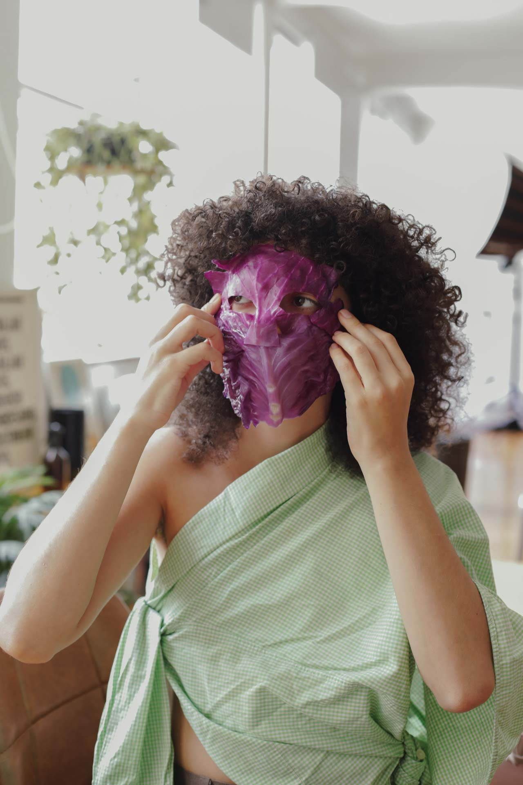
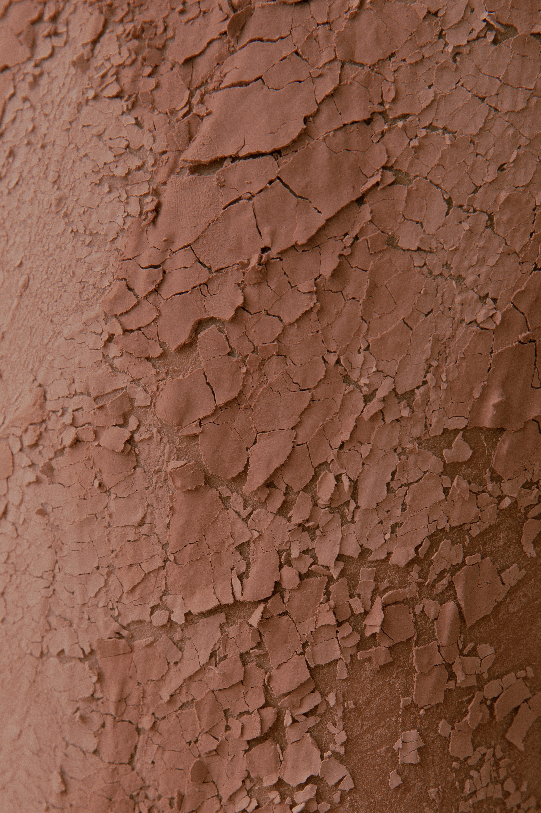
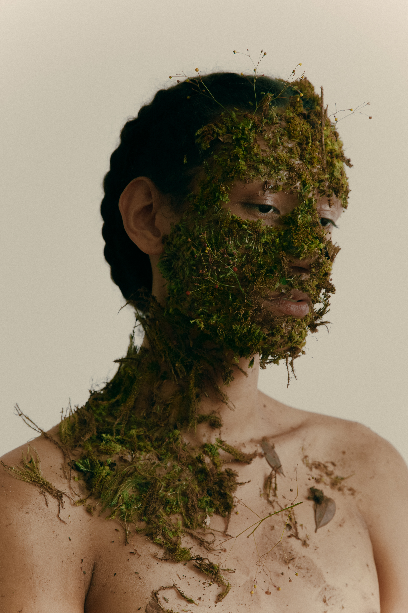
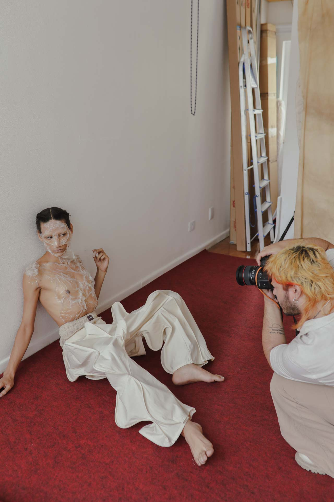

stories collective — organic extravaganza
2024
stories collective é uma plataforma multimídia dedicada a histórias criativas e inspiradoras. com um olhar diverso, apresenta narrativas contemporâneas por meio de fotografias, entrevistas e perfis de pessoas criativas conectadas ao seu tempo.
em organic extravaganza, a equipe criativa transforma cascas de repolho em máscaras de beleza e celebra o universo orgânico, lembrando que a inspiração pode brotar de qualquer lugar. o editorial faz parte da edição Threads of Change que suscita diálogos entre práticas de sustentabilidade, inovação e ativismo político nas disciplinas do design de moda, do jornalismo e as demais áreas correlatas ao mercado criativo. além da revista digital e impressa, a edição rendeu também uma exposição coletiva em São Paulo, inaugurada em março de 2024.







team
direção de arte e styling
Carol Veríssimo @c__verissimo
fotografia
Johnny Moraes @johnnymoraesph
modelos
@sereiadoasfalto
@metanfetanini
@jacque.jordao
beauty
Cleiton Santos @eucleiitonsantos
hairstylist
Felipe Araújo @felipearaujo__
assistente de styling
Lincon Catto @lncnctt
assistente de direção de arte
Naká @anak_barbosa
bastidores
Pan Alves @panalves
apoio
@estudio.praxe
@leftelstudio